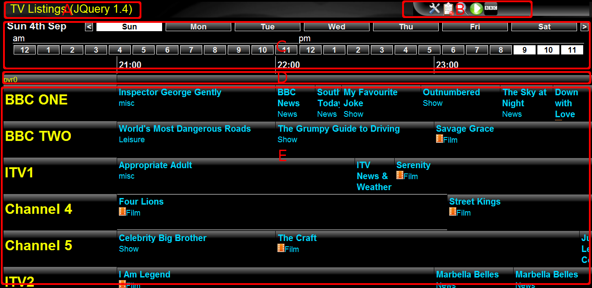
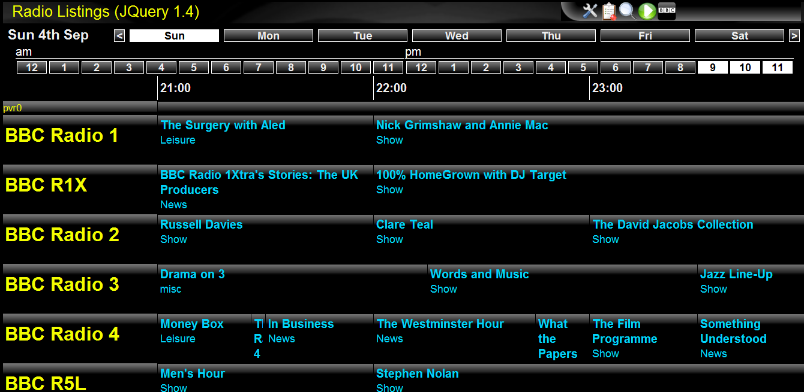
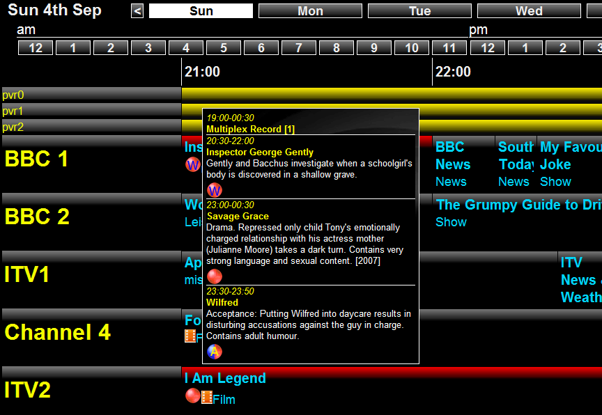

The electronic program guide (EPG) shows the latest program listings for a window of time. This page is made up of several sections:
Switch between TV listings and radio listings by clicking the title 'TV Listings' in the top left hand corner.
By default, the EPG page is shown whenever the web page is first opened. When you switch to another page, switch back to the EPG again by clicking on the "tv" icon.
You can change the day of the week displayed by clicking the appropriate day at the top of the listing. Clicking the '<' before Sunday or the '>' after Saturday scrolls back or forward by 1 week. Adjust the start hour shown by clicking on the hour bar under the day bar.
Click on the toolbar icons to switch to the other pages.
To see more detail of a program, click on the program to open a detail window. The 'bubble' icon in the bottom left corner of this window can be clicked to bring up the record select menu. If a pvr bar shows a red (or yellow) bar, clicking on it will show the details for that recording.
Note that some very short programs may show just as a very thin bar, but they can be selected and recordings scheduled.
Currently, recording selection is split into 4 main groups, each group having it's own group of valid selections. Note that the 'IPLAY' groups will only be shown if the program is a BBC program (IMPORTANT: you need to have installed get_iplayer seperately for any IPLAY recordings to work).
Uses the DVB-T tuner to record the program. Any program scheduled to be recorded by DVB-T is shown highlighted in red.
In this group, the valid recording options are:
This program will not be recorded.
Record the program on this date and at this time, once only.
Record the program on this day and at this time, every week.
Note: the scheduler allows a 4 hour window of variation when testing the time of each program. This allows the recording to be adjusted due to scheduling changes. This window is also applied for the 'daily' recording.
Record the program at this time, every day.
Record any program with this (exact) title at any time or day as long as it is on the specified channel.
Record any program with this (exact) title at any time or day and on any channel.
Again uses the DVB-T tuner to record, but in this case the title match used to decide whether to record uses a regular expression. Recordings of this type can only be set up using the Search page.
This program will not be recorded.
Record any program with this title expression at any time or day as long as it is on the specified channel.
Record any program with this title expression at any time or day and on any channel.
Downloads the program from the BBC iplayer. Any program scheduled to be recorded by IPLAY is shown highlighted in blue.
In this group, the valid recording options are:
This program will not be recorded.
Record the program on this date and at this time, once only.
Record the program on this day and at this time, every week.
Record the program at this time, every day.
Record any program with this title at any time or day as long as it is on the specified channel.
Record any program with this title at any time or day and on any channel.
Combines DVBT and IPLAY in that it schedules an iplayer download AND records the program as well. This is to cover those cases where the BBC iplayer may not be available for this program (either temporarily or permenantly) and ensures the program is recorded via the DVB-T tuner as an alternative.
Under the hour display is a thin bar labelled 'pvr0'. This shows scheduled recordings for DVB-T adapter0 (note taht you will see a pvr bar for each fitted DVB-T tuner). Scheduled recordings are shown as red bars (or yellow). Note that you can adjust the recording (via it's record select menu) from the pvr bar in exactly the same way as going to the appropriate program in the listings.
When a recording is shown in red, this means that the recording is for a single program. If the recording is shown in yellow, then this means the recording is part of a multiplex recording i.e. multiple programs are scheduled to be recorded at the same time.